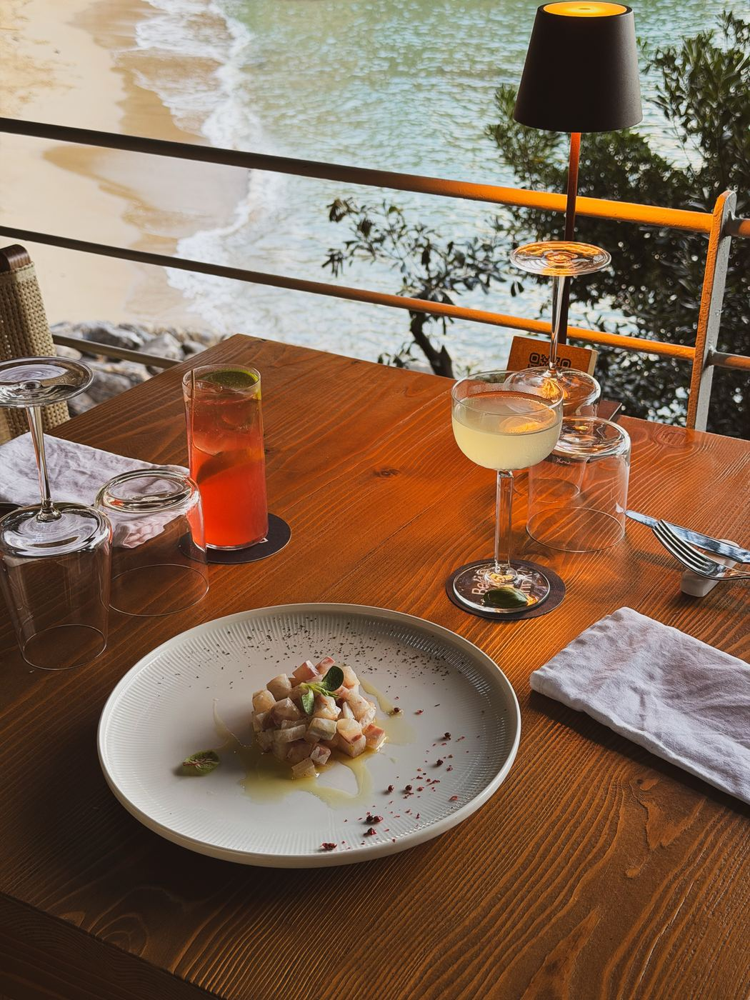
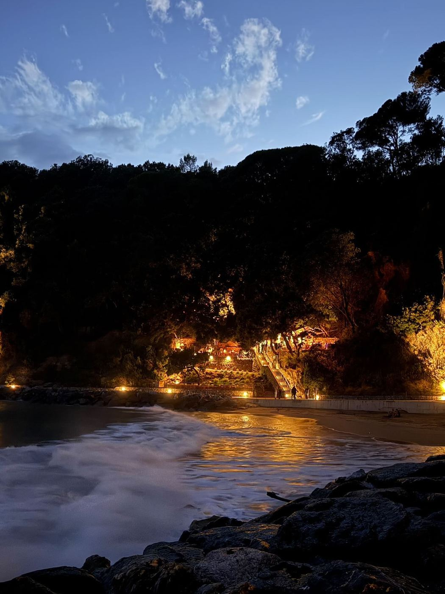
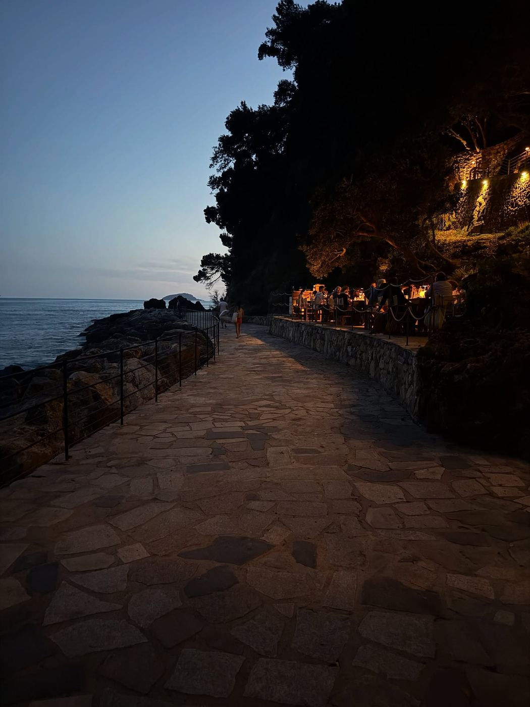

Formula 1
Il classico
€ 15 a persona
Un drink a scelta dalla carta, focaccia ligure, olive taggiasche e frutta secca.

Ogni sera dalle 18:00, quando la luce comincia a scendere dietro Portovenere.
Non è solo un drink. È il momento in cui la spiaggia si svuota, la luce diventa arancione e il golfo resta in silenzio per venti minuti. Noi apparecchiamo i tavoli bassi sulla scogliera, accendiamo le lampade e mettiamo su un disco. Il resto lo fa il cielo.


Bitter artigianale ligure, prosecco, soda al rosmarino e scorza di limone di costiera.
Gin mediterraneo, basilico di Prà pestato al momento, lime e un velo di sciroppo ai pinoli.
Gin, vermouth rosso, bitter e una parte di mirto. Servito su ghiaccio unico.
Vermentino, acqua tonica al sale marino, cetriolo e finocchietto selvatico. Analcolico su richiesta.
Selezione ligure, franciacorta e champagne. Chiedi la proposta della sera.
€ 15 a persona
Un drink a scelta dalla carta, focaccia ligure, olive taggiasche e frutta secca.
€ 28 a persona
Un drink, acciughe del golfo, polpo, insalata di seppie, focaccia di Recco. Il nostro preferito al tramonto.
€ 38 a persona
Due drink, selezione di crudi, fritto leggero, verdure ripiene e dolce al cucchiaio. Minimo due persone, su prenotazione.
Le formule sono disponibili tutti i giorni dalle 18:00 alle 20:30. Nei weekend di alta stagione la prenotazione è fortemente consigliata.
Consigliamo di prenotare per un'ora prima del tramonto: si fa in tempo a scegliere con calma e a vedere tutto.